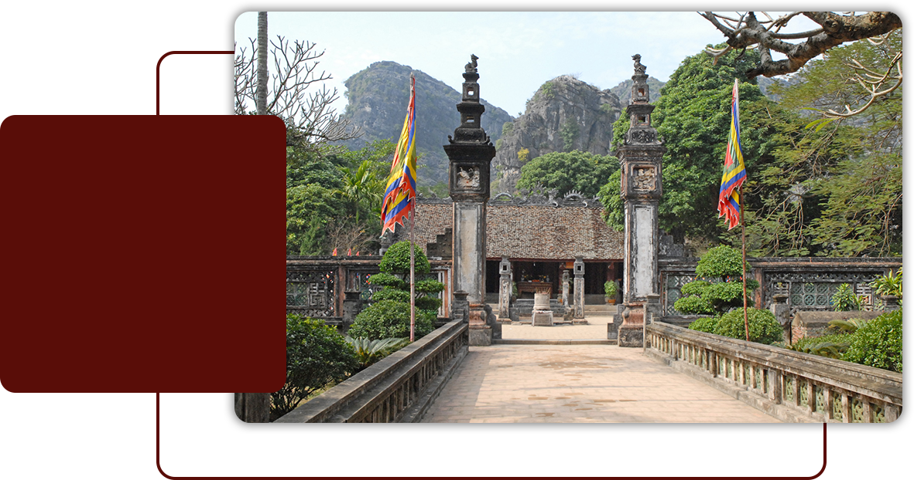

Trong không gian tín ngưỡng đền miếu người Việt, đặc biệt là miếu các vị tiên đế, đồ án rồng được sử dụng phổ biến với tần suất lớn, hình ảnh 1 tỉnh mỹ trên những vị trí tôn nghiêm. Đền Vua Đinh, đền Vua Lê (Hoa Lư, Ninh Bình) sau lần trùng tu lớn vào giai đoạn Quang Hưng, thời Lê Trung Hưng, tiếp tục phát triển mở rộng thêm một số hạng mục trong thời kỳ nhà Nguyễn. Ngoài đồ án rồng, một trong những linh vật xuất hiện nhiều trong hai ngôi đền chính là đồ án nghệ. Từ dưới đất cho đến tận nóc, nghề là linh vật xuất hiện hầu như mọi vị trí trong không gian đến Vua Đinh, đền Vua Lê. Nghề thể hiện cao độ sự sáng tạo nhất với sự đa dạng về hình dáng, thần thái, chất liệu, kích thước, thủ pháp. Hình tượng nghệ là một ví dụ tiêu biểu cho sự tiếp biến, dung hợp văn hóa trong không gian tín ngưỡng của người Việt. Những con nghê ở hai ngôi đền Vua Định, Vua Lê được tạo tác trong khoảng bốn thế kỷ: XVI-XVII-XVIII-XIX.
Chúng xứng đáng tiêu biểu cho trình độ nghệ thuật vừa giản dị, thuần hậu lại rất mạnh mẽ, lôi cuốn của người Việt. Nó ẩm áp, gần gũi, tinh tế, kỹ lưỡng mà không phô trương sự cầu kỳ, tỉa tót. Nhìn kỹ vào những khuôn mặt nghệ, ta bắt gặp những ánh mắt, nụ cười, cả những giọt nước mắt của người xưa đã từng thấm lên đả, lên gỗ.
Cuốn sách bắt đầu từ những con nghề ở đền Vua Đinh, Vua Lê ở cố đô Hoa Lư, sau đó mở rộng tầm nhìn đến các vùng miền khác. Vì chúng tôi tình cờ phát hiện ra rằng, người Việt đi tới đâu thì nghề cũng theo tới đó. Nghề có mặt ở đền miếu, lăng tẩm, đình chùa, từ thường dân cho đến cả chốn hoàng cung. Cuốn sách chỉ có đôi lời bàn luận, dẫn giải còn phần lớn là cung cấp những tư liệu hình ảnh, những bản đạc họa, sơ đồ, bởi chúng tôi biết rằng đây chỉ là những phác thảo ban đầu chân dung một lĩnh vật quan trọng bậc nhất của người Việt. Cho nên cuốn sách Phác họa nghệ - gã linh vật bên rìa mà các bạn có trên tay như một sự trị ân với di sản tinh thần mà cha ông ta đã trao truyền cho hậu thế.
Nghê ở đền vua Đinh - vua Lê

Trong khoảng hơn 100 năm lại đây, đồ án nghệ bắt đầu được chú ý. Đầu tiên chính là thế hệ các học giả Pháp. Cha L. Cadière trong cuốn Les Motifs de l'Art Annamite cũng rất băn khoăn khi nghiên cứu về hình tượng nghệ trong mỹ thuật Huế.
Cha L. Cadière cũng giống với K.Ball khi coi sư tử là một họ lớn trong mỹ thuật châu Á. Nhưng là người có thái độ học thuật nghiêm cần nên Cadière vẫn để nguyên chữ nghề trong từ vựng nghiên cứu của mình. Tuy vậy, Lan Hương và Ưng Tiếu trong cuốn sách Hoa văn cung đình Huế (biên dịch lại sách Les Motifs de l'Art Annamite) đã loại bỏ tên gọi nghề và chuyển ngữ là sư tử nhanh. Đây là sai sót về mặt kiến thức của người dịch. L. Cadière không chỉ am hiểu văn hóa Việt Nam mà ông còn am tường thấu đáo văn hóa Trung Hoa. Sách “I Mục thiên tử truyện: Quyển 1 có ghi về loài toan nghề có khả năng chạy hàng trăm dặm. Là người được coi am hiểu nhất nghệ thuật Việt Nam, nhưng L. Bezacier trong cuốn sách LArt Vietnamien, (Pa trong chú thích minh họa số 33, ông đã gọi Con nghệ ở đền Vua Đinh (Hoa Lư là chó đá). Nguyên văn: "Fic.33. Chien gardien devant le temple funeraire de Dinh - Tiên - Hoàng à Hoa-lu" (prov. de Ninh-binh)”. Có một sự hiểu nhầm đáng tiếc của các học giả nước ngoài khi nhìn con nghê thành sư tử. Trong cuốn La grammaire des formes et des styles Asia (Mỹ thuật châu Á quy pháp tạo hình và phong cách) trong phần viết về Việt Nam, các tác giả luôn gọi con nghệ thành sự tử.
Kiểu thức lựa chọn
văn hóa Việt
Nguyễn Hữu Thông trong cuốn Mỹ thuật Huế nhìn từ góc độ ý nghĩa và biểu tượng trang trí đã coi con thú đá ở Hiển Nhân Môn là con kỳ lân; nhưng một nhà nghiên cứu Huế khác là Trần Đức Anh Sơn đã khẳng định đó là con nghê. Sự phân định giữa nghệ và kỳ lân khá phức tạp trong mỹ thuật dân gian nhưng khá dễ với mỹ thuật cung đình. Nghê thường không có vậy, không có sừng, có ba, bốn móng trước và một móng phía sau. Kỳ lân chính là hươu nên đầu có sừng, thuộc loài móng guốc; là con vật được tưởng tượng thêm cho linh thiêng nên thân nghệ thường có vẩy. Căn cứ vào nhận dạng ngoại hình, tôi đồng ý với cách gọi của Trần Đức Anh Sơn, đấy chính là con nghê. Người Việt hiện nay không phân biệt được đâu là con nghê, đâu là con sư tử có một phần do sách vở.
Nghê thuật trang trí ở hai ngôi đền Vua Đinh và Vua Lê chủ yếu là nghệ thuật của thế kỷ XVII-XVIII-XIX. Đặc điểm của giai đoạn này là Đại Việt đã cuốn vào lực hút Trung Hoa cả trên phương diện chính trị và nghệ thuật. Những ảnh hưởng của văn hóa Ấn Độ đã suy yếu rất nhiều, ngay cả trong lĩnh vực Phật giáo. Tuy vậy, sự dung hợp các kiểu thức trang trí Ấn Độ và Trung Hoa vẫn in dấu trong hệ thống trang trí ở hai ngôi đền này. Cũng như Trung Hoa, rồng liên quan đến vương triều phong kiến Việt Nam. Sự xuất hiện nghệ trong lịch sử tạo hình người Việt đã khiến cho con rồng gần hơn với cõi nhân gian, làm bớt đi sự hung hãn và ngạo nghễ của linh vật tượng trưng cho thiên tử.